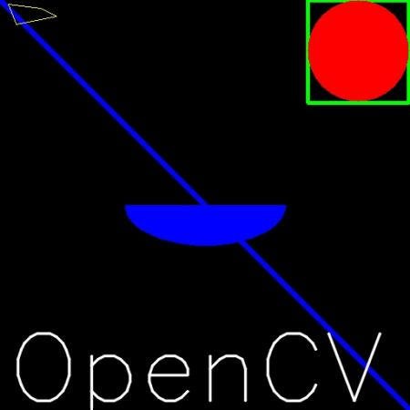

Drawing Functions in OpenCV
Goal
- Learn to draw different geometric shapes with OpenCV
- You will learn these functions : cv2.line(), cv2.circle(), cv2.rectangle(), cv2.ellipse(), cv2.putText() etc.
Code
In all the above functions, you will see some common arguments as given below:
- img : The image where you want to draw the shapes
- color : Color of the shape. for BGR, pass it as a tuple, eg: (255,0,0) for blue. For grayscale, just pass the scalar value.
- thickness : Thickness of the line or circle etc. If -1 is passed for closed figures like circles, it will fill the shape. default thickness = 1
- lineType : Type of line, whether 8-connected, anti-aliased line etc. By default, it is 8-connected. cv2.LINE_AA gives anti-aliased line which looks great for curves.
Drawing Line
To draw a line, you need to pass starting and ending coordinates of line. We will create a black image and draw a blue line on it from top-left to bottom-right corners.
import numpy as np import cv2 # Create a black image img = np.zeros((512,512,3), np.uint8) # Draw a diagonal blue line with thickness of 5 px cv2.line(img,(0,0),(511,511),(255,0,0),5)
Drawing Rectangle
To draw a rectangle, you need top-left corner and bottom-right corner of rectangle. This time we will draw a green rectangle at the top-right corner of image.
cv2.rectangle(img,(384,0),(510,128),(0,255,0),3)
Drawing Circle
To draw a circle, you need its center coordinates and radius. We will draw a circle inside the rectangle drawn above.
cv2.circle(img,(447,63), 63, (0,0,255), -1)
Drawing Ellipse
To draw the ellipse, we need to pass several arguments. One argument is the center location (x,y). Next argument is axes lengths (major axis length, minor axis length). angle is the angle of rotation of ellipse in anti-clockwise direction. startAngle and endAngle denotes the starting and ending of ellipse arc measured in clockwise direction from major axis. i.e. giving values 0 and 360 gives the full ellipse. For more details, check the documentation of cv2.ellipse(). Below example draws a half ellipse at the center of the image.
cv2.ellipse(img,(256,256),(100,50),0,0,180,255,-1)
Drawing Polygon
To draw a polygon, first you need coordinates of vertices. Make those points into an array of shape ROWSx1x2 where ROWS are number of vertices and it should be of type int32. Here we draw a small polygon of with four vertices in yellow color.
pts = np.array([[10,5],[20,30],[70,20],[50,10]], np.int32) pts = pts.reshape((-1,1,2)) cv2.polylines(img,[pts],True,(0,255,255))
If third argument is False, you will get a polylines joining all the points, not a closed shape.
cv2.polylines() can be used to draw multiple lines. Just create a list of all the lines you want to draw and pass it to the function. All lines will be drawn individually. It is a much better and faster way to draw a group of lines than calling cv2.line() for each line.
Adding Text to Images:
To put texts in images, you need specify following things.
- Text data that you want to write
- Position coordinates of where you want put it (i.e. bottom-left corner where data starts).
- Font type (Check cv2.putText() docs for supported fonts)
- Font Scale (specifies the size of font)
- regular things like color, thickness, lineType etc. For better look, lineType = cv2.LINE_AA is recommended.
We will write OpenCV on our image in white color.
font = cv2.FONT_HERSHEY_SIMPLEX cv2.putText(img,'OpenCV',(10,500), font, 4,(255,255,255),2,cv2.LINE_AA)
Result
So it is time to see the final result of our drawing. As you studied in previous articles, display the image to see it.
Additional Resources
- The angles used in ellipse function is not our circular angles. For more details, visit this discussion.
Exercises
- Try to create the logo of OpenCV using drawing functions available in OpenCV.